The static
bypass switch fan module is responsible for cooling the static bypass
switch and the connection box by forced cooling. The module consists
of four fans and one fan monitoring board. The static bypass switch
module requires three cooling fans while the fourth fan is for the
connection box.
24/15 DC ELV fan supply voltage is generated by the PSU of
the static bypass switch controller board
Fan speed can be increased by increasing the fan supply voltage
to 24 VDC
Monitoring of the fan speed requires a supply voltage of 24
VDC SELV
The fan module has 8 status LEDs on the front indicating
the status of the fans.Figure 1. SBS fan module status LEDs
LED
Color
Status
1
Green
Supply 1 OK
2
Red
Fan 1 inoperable
3
Red
Fan 2 inoperable
4
Red
(LED not used)
5
Green
Supply 2 OK
6
Red
Fan 4 inoperable
7
Red
Fan 5 inoperable
8
Red
(LED not used)
Figure 2. Principle diagram for the static bypass switch ventilation
